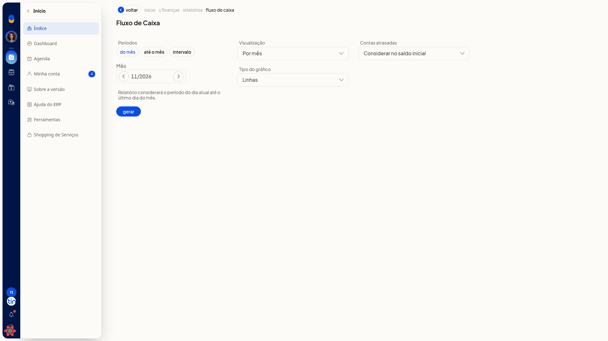
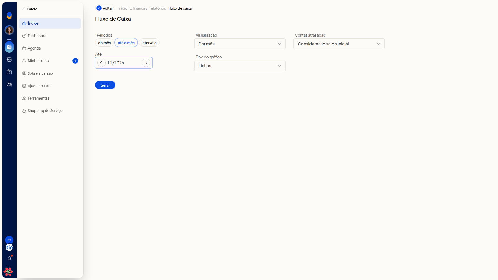
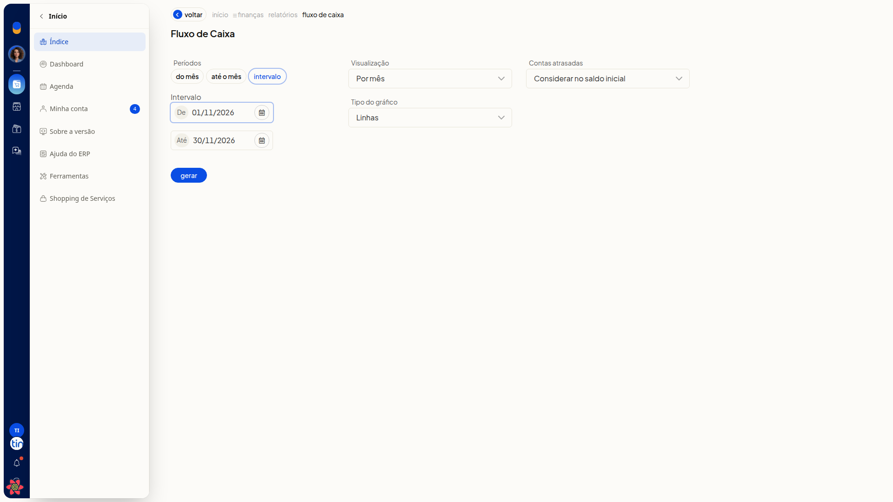

Gerar o fluxo de caixa de contas financeiras específicas
No ERP da Olist, o Fluxo de Caixa prepara a projeção de um mês, até um mês ou de um intervalo. Você escolhe a visualização, o tipo de gráfico e se contas atrasadas entram no saldo inicial.
Em Finanças > Relatórios, a tela não tem filtro de conta financeira. Você não consegue limitar o fluxo a uma conta ou a várias contas específicas.
Importante
- Para gerar com Visualização em Por dia, o intervalo não pode ser maior que 2 meses.
- Para gerar com Visualização em Por semana, o intervalo não pode ser maior que 6 meses.
- Contas atrasadas trata lançamentos em atraso no saldo inicial. Não substitui um filtro de conta financeira.
Instruções
-
Acesse Finanças > Relatórios.
-
Na lista de relatórios, abra Fluxo de Caixa.

-
Em Período, selecione do mês, até o mês ou intervalo e informe a data. Os campos de data não são obrigatórios.
-
Em do mês, preencha Mês no formato MM/AAAA.
-
Em até o mês, preencha o mês em Até.
-
Em intervalo, preencha De e Até no formato DD/MM/AAAA.


- Ajuste Visualização, Tipo do gráfico e Contas atrasadas. Nenhum desses campos é obrigatório.
- Em Visualização, selecione Automática, Por dia, Por semana ou Por mês.
- Em Tipo do gráfico, selecione Não exibir, Linhas ou Barras.
- Em Contas atrasadas, selecione Considerar no saldo inicial ou Não considerar.
- Clique em gerar para concluir a geração no período escolhido, sem restrição a contas financeiras específicas.